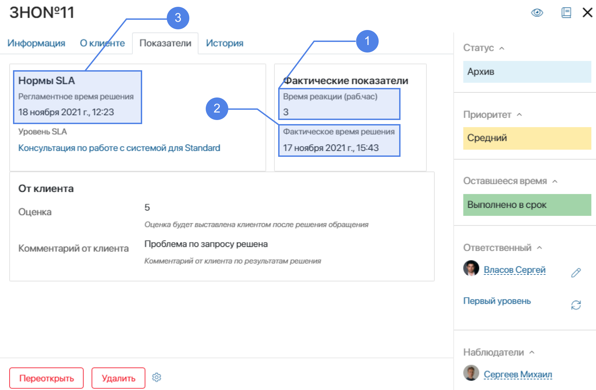
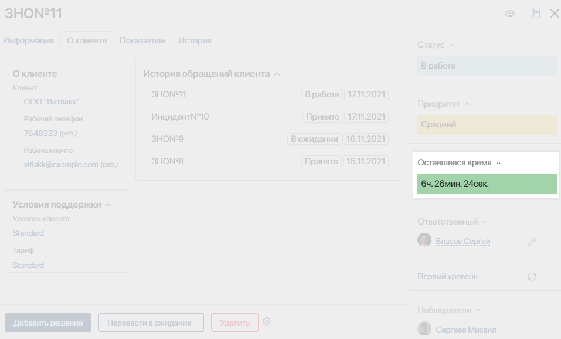
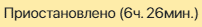
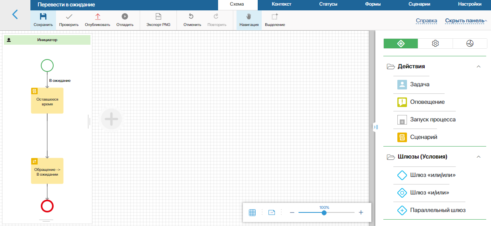
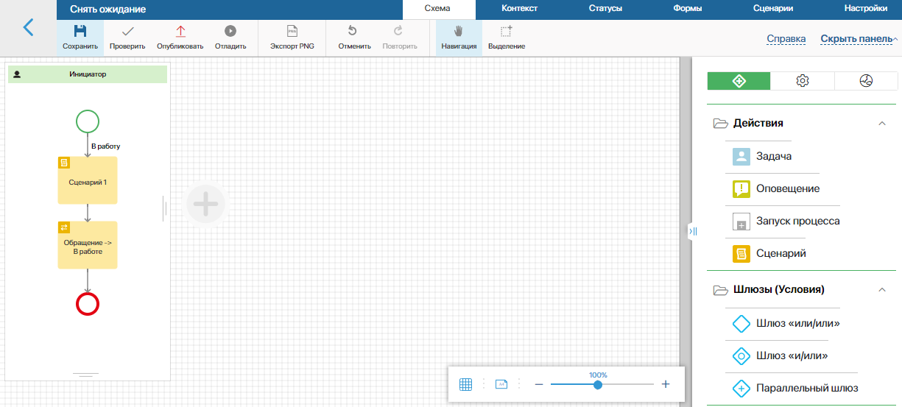

В ServiceDesk можно контролировать скорость обработки обращений. Нормативные сроки работы с обращением задаются в приложении Уровень SLA и зависят от сервиса и категории клиента. Фактические сроки рассчитываются в рамках преднастроенных бизнес-процессов и отображаются в карточке обращения.

Для каждого уровня SLA можно указать следующие данные.
|
Описание |
Начало отсчета |
Конец отсчета |
Как рассчитывается |
Референсное значение |
1. Время реакции (ч) |
Фактическое время от момента создания обращения до того, как его взяли в работу. |
Сразу после создания обращения. |
Обращение взяли в работу. |
В рамках бизнес-процесса «Взять в работу». |
Задаётся в приложении Уровень SLA в поле Время реакции. |
2. Фактическое время решения (ч) |
Фактическое время обработки обращения. |
Обращение взяли в работу. |
Добавлено решение по обращению. |
В рамках бизнес-процесса «Добавить решение». |
Задаётся в приложении Уровень SLA в поле Нормативное время решения. |
3. Регламентное время решения (ч) |
Справочное значение, которое является нормативным для обработки обращения. |
|
|
|
Задаётся в приложении Уровень SLA. |
Допустимое время простоя (ч) |
Максимальное время, в течение которого сервис может быть недоступен для клиентов. Это время не отображается в карточке обращения, но заданное значение можно просмотреть в приложении Уровень SLA в качестве справочной информации. |
|
|
|
Задаётся в приложении Уровень SLA в поле Допустимое время простоя. |
В карточке обращения в блоке Оставшееся время можно оценить текущее состояние работы по обращению при помощи индикатора.

— время, оставшееся на обработку обращения. Отображается, если регламентное время завершения работы с обращением ещё не наступило.
— отображается, если регламентное время закончилось и обработка обращения завершена.
— отображается, если регламентное время уже закончилось, а обработка обращения ещё не завершена.
 — отображается, если обращение находится в ожидании. При этом отсчёт времени приостанавливается. В скобках указывается время, оставшееся на работу с обращением.
Приостановка работы с обращением
Оператор ServiceDesk может временно приостановить работу с обращением. Например, когда он ожидает ответа от автора обращения. Для этого оператор должен открыть карточку обращения, нажать кнопку Перевести в ожидание и подтвердить действие. При этом запускается бизнес-процесс «Перевести в ожидание», в ходе которого приостанавливается отсчёт времени, отведённого на работу с обращением. Для обращения устанавливается статус «В ожидании».
Когда работу с обращением нужно будет продолжить, оператор может открыть карточку обращения, нажать кнопку Снять с ожидания и подтвердить действие. При этом запускается бизнес-процесс «Снять ожидание», в ходе которого вновь начинается отсчёт времени обработки обращения с того момента, когда его приостановили. Для обращения устанавливается статус «В работе».
Эти бизнес-процессы настроены в ServiceDesk по умолчанию. Они созданы на уровне приложения Обращения. Если вы хотите внести изменения в эти процессы, их можно доработать самостоятельно.
Чтобы перейти к процессу, выполните следующие действия:
- Откройте раздел ServiceDesk.
- Нажмите на значок шестерёнки рядом с названием приложения Обращения, выберите пункт меню Бизнес-процессы и нажмите на название процесса. Подробнее о работе с процессами читайте в разделе «Дизайнер бизнес-процессов».
Рассмотрим подробнее бизнес-процессы «Перевести в ожидание» и «Снять ожидание».
Перевести в ожидание

- Блок Скрипт.
В этом скрипте вычисляется время, которое осталось для работы с обращением. Для этого используется функция calcLastTimeSecondMethod.
Чтобы открыть редактор сценариев, перейдите к настройкам блока и нажмите кнопку Открыть справа от названия функции.
Пример скрипта для вычисления оставшегося времени приведён ниже.
async function calcLastTimeSecondMethod(): Promise<void> {
const request = await Context.data.obrasheniya!.fetch();
if (request) {
const lastTime = request.data.lastTime;
const changeDate = request.data.statusChangeDate;
const date_now = new Datetime();
if (lastTime !== undefined && changeDate) {
const workedDuration = await System.productionSchedule.getWorkingTime(changeDate, date_now);
const workedTime = workedDuration?.seconds ?? 0;
const newLastTime = lastTime - workedTime;
Context.data.ostavsheesya_vremya = newLastTime >= 0 ? newLastTime : 0;
request.data.lastTime = newLastTime >= 0 ? newLastTime : 0;
}
request.data.statusChangeDate = date_now;
await request.save();
}
}
где,
- obrasheniya — контекстная переменная процесса типа Приложение, которая ссылается на приложение Обращения;
- statusChangeDate — свойство приложения Обращения, в котором сохраняется дата, когда для обращения был установлен статус «В ожидании»;
- ostavsheesya_vremya — контекстная переменная процесса, в которой сохраняется время, оставшееся на обработку обращения.
Во время исполнения процесса может возникнуть ошибка скрипта. На вкладке Обработка ошибок можно определить, какие действия должны выполняться в этом случае.
В нашем случае включена опция Повторить выполнение, чтобы скрипт выполнялся повторно.
В поле Количество повторений указывается, сколько попыток выполнения скрипта будет предприниматься.
В поле Время задержки между повторениями (сек) определяется частота попыток воспроизведения скрипта.
Подробнее об этом элементе читайте в статье «Скрипт».
- Блок Управление статусом.
Этот элемент позволяет изменить статус обращения.
В настройках элемента указывается его название, контекстная переменная «Обращение», которая ссылается на приложение Обращения, и выбирается статус, который будет установлен на этом этапе. В данном случае указывается статус «В ожидании».
Подробнее об этом элементе читайте в статье «Управление статусом».
Снять ожидание

- Блок Скрипт.
В этом скрипте вычисляется время, когда для обращения был установлен статус «В ожидании». Это нужно, чтобы запустить отсчёт времени на обработку обращения с того момента, когда его приостановили. Для этого используется функция calcLastTime.
Чтобы открыть редактор скриптов, перейдите к настройкам блока и нажмите кнопку Открыть справа от названия функции.
Пример скрипта для вычисления оставшегося времени приведён ниже.
async function calcLastTime(): Promise<void> {
const date_now = new Datetime();
const request = await Context.data.obrasheniya!.fetch();
request.data.statusChangeDate = date_now;
await request.save();
}
где,
- obrasheniya — контекстная переменная процесса, которая ссылается на приложение Обращения;
- statusChangeDate — свойство приложения Обращения, в котором сохраняется дата, когда для обращения был установлен статус «В ожидании».
Во время исполнения процесса может возникнуть ошибка скрипта. На вкладке Обработка ошибок можно определить, какие действия должны выполняться в этом случае. Настройка этой вкладки выполняется так же, как в процессе «Перевести в ожидание» в блоке Скрипт.
- Блок Управление статусом.
Этот элемент позволяет изменить статус обращения.
В настройках элемента указывается его название, контекстная переменная «Обращение», которая ссылается на приложение Обращения, и выбирается статус, который будет установлен на этом этапе. В данном случае указывается статус «В работе».
В ходе этих бизнес-процессов изменяются статусы обращения. При установке статуса «В ожидании» приостанавливается время обработки обращения.
Вы можете добавить новые статусы в бизнес-процессы и настроить их таким образом, чтобы при их установке приостанавливался отсчёт времени, отведённого на обработку обращения. Например, чтобы зафиксировать передачу обращения в отдел разработки, можно создать статус «Передано в разработку». Подробнее читайте в статье «Передача обращения в разработку».